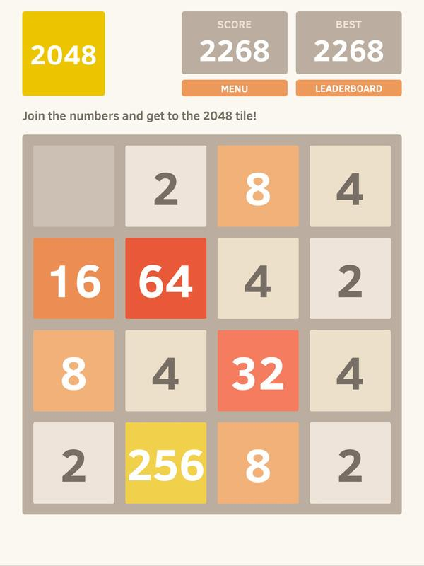

Un algoritmo es una secuencia de pasos estrictamente estructurados, para cumplir una función en especifico.
Una de las condiciones que debe tener un algoritmo, es que siempre al usarlo, debe dar el mismo resultado.
Y este debe ser finito, iniciar y finalizar, ya sea dando un resultado o terminando un problema. También se
debe tener bien en claro el problema a solucionar, elegir una forma de solucionar el problema mediante un
algoritmo y probar la capacidad y resultados del algoritmo.
Son las representaciones visuales que se les dan a los algoritmos, voy a usar PSEint para realizar estos
DFD
1ra Actividad del Modulo
| Curso |
1001 TS |
Estudiante |
Martín Steven Hernández Ortiz |
| No. de Documento |
1.013.107.870 |
Telefono |
313 3391259 |
| Correo Electronico |
martinstevenhernandezortiz@gmail.com |
Fecha de Entrega |
02/25/2021 |
Escoge un juego de tu preferencia y trata de explicar detalladamente (reglas y condiciones)
a otras personas, incluyendo graficas o dibujos de cómo debe jugar, para este ejercicio debes
pensar que las otras personas no saben nada del juego. Puedes graficar.
2048
 Icono de 2048
Icono de 2048
Descripción General del Juego
2048 es un juego muy sencillo en cuanto a mecanicas, pero es un juego divertido y bueno
para el aprendizaje de las potencias de 2.
Este juego fue hecho por Grabiele Cirulli, un desarrollador web, italiano. Este juego fue
publicado en GitHub, ya que es un proyecto de free and open-source software, este esta hecho
con JavaScript y CSS, además fue hecho en solo fin de semana.
Este juego es totalmente multiplataforma, ya que el juego al ser tan sencillo, puede ser
jugado en celulares, computadores, e inclusive terminales.
Concepto del Juego
2048 es un juego de Puzzle o rompecabezas, en donde debemos sumar unos cuadrados que contienen
las potencias de 2 (2, 4, 8, 16, 32, 64, 128, 256...). Estos cuadrados estan en una cuadricula de 4x4,
aún que se puede cambiar para obtener diferentes modos de juego.
Con estos cuadrados, debemos sumarlos hasta que uno de ellos sea igual a 2048. Esto se debe lograr al
sumar los cuadrados con las mismas potencias (2 + 2 = 4; 4 + 4 = 8; 8 + 8 = 16;).
Estos cuadrados van a ir apareciendo poco a poco en la cuadricula, generalmente de valores bajos como 2 y 4.
Como Jugar 2048
Para jugar, solo debemos usar las teclas direccionales de nuestro teclado o las equivalentes en la plataforma
en que estes jugando. Vamos a usar estas teclas para mover todos los cuadrados con un solo movimiento hacia el
lado prefierido (derecha, izquierda, arriba o abajo). Cuando movamos los cuadrados, estos se pueden sumar, las
condiciones para que estos se sumen deben ser:
- Deben ser del mismo valor
- Deben estar uno junto a el otro
- Deben estar alineados en la dirreción que se haya movido
Esta suma va a convertir a ambos cuadrados en la potencia que suman y te sumaran el valor de la suma a tu puntaje,
este puntaje se rellena con cualquier suma que ocurra, este si es suficientemente alto podra ser guardado como el
mejor puntaje o mejores puntajes, cosa que podras competir contra cada vez que inicies una nueva partida.
Además algunas veces cuando hagamos movimientos, en la cuadricula, especialmente en espacios vacios, van a aparecer
cudrados con valores bajos, como 2 y 4, estos los debemos usar para crear cuadrados con valores más altos, pero toca tener
cuidado, ya que se pueden volver un fatidio por varias razones como:
- Ocupan espacios no deseados
- Interrumpen la suma de otros cuadrados
- Pueden ocupar todo el espacio de la cuadricula
- Son una de las formas más sencillas para perder
- Pueden bloquear la cuadricula, al llenar totalmente una parte de la cuadricula

Interfaz de Usuario de 2048
Como Ganar o Perder
Ahora como en todo juego podemos perder y ganar, para ganar debemos sumar todas las potencias hasta llegar a 2048, al momento
de sumar hasta 2048 ganamos, pero no termina el juego, ya que podemos seguir sumando los cuadrados con las potencias de 2, hasta
llegar a 131,072, que es el valor máximo de potencia que te permite tener el juego.
Pero para perder debemos tener toda la cuadricula llena de cuadrados, pero sin que estos se puedan sumar entre ellos. Ya que
como van apareciendo más y nuevos cuadrados, estos pueden llenar facilmente tu cuadricula en unos pocos movimientos. Pero
ojo que se puede llenar la cuadricula y no perder, esto pasa porque aún entre alguno de esos cuadrados, algunos se pueden sumar, buscalos
y intenta salir de esa situación.
Link para jugar 2048 Online
Crea un algoritmo de un plato típico colombiano (Sancocho, ajiaco, bandeja paisa,
chuleta valluna, etc.) donde describe cada uno de los pasos para preparar alguno de
los platos que escogiste.
Como Cocinar Changua
Link para descargar el DFD
Link para ver el Código de PSeint (ew)

{kind=link}